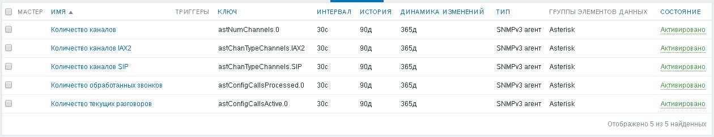
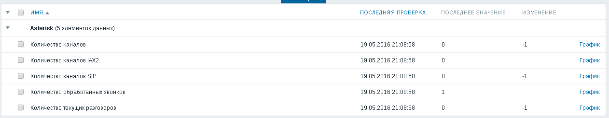

Меня заинтересовало наличие в Asterisk модуля res_snmp. Я решил попробовать настроить его и узнать, за какими параметрами Asterisk можно наблюдать с его помощью.
Устанавливаем SNMP-агента:
# apt-get install snmpd
Нужно заглянуть в файл /etc/default/snmpd и убедиться, что запуск SNMP-агента разрешён:
SNMPDRUN=yes
Редактируем файл конфигурации SNMP-агента /etc/snmp/snmpd.conf, приведя к следующему виду:
agentAddress udp:127.0.0.1:161 view asterisk included .1.3.6.1.2.1.1.1 view asterisk included .1.3.6.1.2.1.1.2 view asterisk included .1.3.6.1.2.1.1.4 view asterisk included .1.3.6.1.2.1.1.5 view asterisk included .1.3.6.1.2.1.1.6 view asterisk included .1.3.6.1.4.1.22736 rocommunity public 127.0.0.1 -V asterisk rwcommunity private 127.0.0.1 -V asterisk createUser zabbix SHA auth_password AES encryption_password rouser zabbix priv -V asterisk sysLocation Ufa sysContact Vladimir Stupin <vladimir@stupin.su> sysObjectID .1.3.6.1.4.1.22736.1 master agentx agentXSocket /var/agentx/master agentXPerms 0660 0775 nobody asterisk
Указанный выше файл конфигурации является лишь примером. Реально вы можете захотеть поменять часть настроек. Например:
Для генерации строк сообщества и паролей я рекомендую воспользоваться, например, программой pwgen, которую можно установить из одноимённого пакета:
# apt-get install pwgen
Сгенерировать 16-символьный пароль можно следующим образом:
$ pwgen 16
Чтобы Asterisk, запущенный от пользователя asterisk, имел доступ к каталогу с Unix-сокету SNMP-агента, меняем права доступа к каталогу /var/agentx:
# chmod o+rx /var/agentx
Перезапускаем SNMP-агента:
# systemctl restart snmpd.service
Открываем файл /etc/asterisk/res_snmp.conf и приводим его к следующему виду:
[general] subagent = yes enabled = yes
После чего просим Asterisk выгрузить модуль SNMP и загрузить его снова:
# asterisk -rx 'module unload res_snmp.so' # asterisk -rx 'module load res_snmp.so'
Посмотреть OID'ы в виде дерева:
$ snmptranslate -M /var/lib/mibs/:/var/lib/mibs/ietf/:/var/lib/mibs/iana/ -m DIGIUM-MIB:ASTERISK-MIB -Tp -Td -Ln 1.3.6.1.4.1.22736 | less
Посмотреть значения OID'ов с их символьными именами по SNMP второй версии можно следующим образом:
$ snmpwalk -v 2c -c public 127.0.0.1 .1.3.6.1.4.1.22736.1 | less
Для SNMP третьей версии то же самое делается так:
$ snmpwalk -v 3 -u zabbix -n '' -l authPriv -a SHA -x AES -A auth_password -X encryption_password 127.0.0.1 .1.3.6.1.2.4.1.22736.1 | less
В качестве основы для шаблона я воспользовался официальными MIB-файлами:
Я подготовил два шаблона для контроля интересующих меня параметров с помощью Zabbix:
Поменять строки сообщества и пароли можно при помощи массового редактирования элементов данных. Из шаблона для второй версии SNMP можно массовым редактированием легко получить и шаблон, использующий первую версию SNMP. Собственно, массовым редактированием можно получить и шаблон, использующий третью версию SNMP.
На снимке экрана ниже показаны имеющиеся в шаблоне элементы данных:
На этом снимке показаны результаты опроса Asterisk по этому шаблону:
К сожалению, SNMP-модуль Asterisk не позволяет узнать состояние регистраций абонентов. Если бы состояние регистраций можно было бы контролировать, я обязательно добавил бы в шаблон низкоуровневое обнаружение регистраций и контроль их состояний. Это позволило бы своевременно обнаруживать проблемы со шлюзами абонентов.
Один из вариантов какого бы то ни было решения этой проблемы может быть следующим. Если VoIP-шлюзы находятся в находятся в отдельной сети, где больше нет никакого оборудования, можно воспользоваться функциями обнаружения Zabbix и автоматически ставить обнаруженные IP-адреса хотя бы на контроль доступности по ICMP.